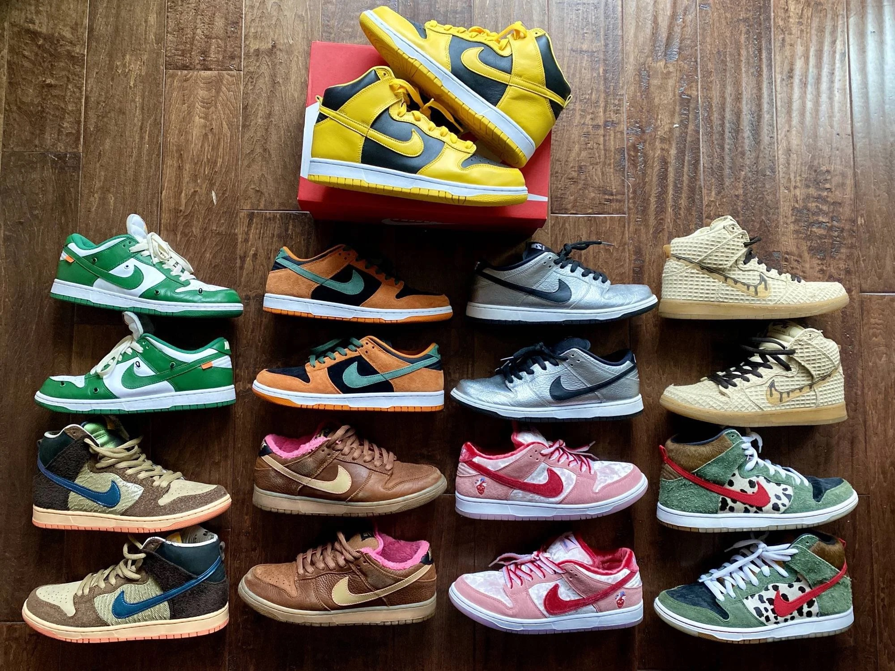

Dunks on the Rise
Collect them all!
One shoe that has more recently boomed in popularity are the Nike Dunks. Dunks were initially introduced back in 1985 as a performance basketball shoe. They are now worn and praised by the entire Nike community as a casual everyday type sneaker. Nike Dunks are constantly being released on a daily to weekly basis, making it difficult to stay on top of the ball and secure the shoes of your dreams. There will be categories specifically for each type of sneaker that will pull up images and release dates making sure you are always in the loop.
Dunk Time
For starters the most fashionable and popular Nike dunk that has everyone searching to get a pair is the "Nike 'Panda' Dunk." This shoe has been restocked in stores on a monthly basis due to its popularity. We want to make sure that when sneakers like these are getting all the hype, that you are able to be get notified to and ready to snag a pair.